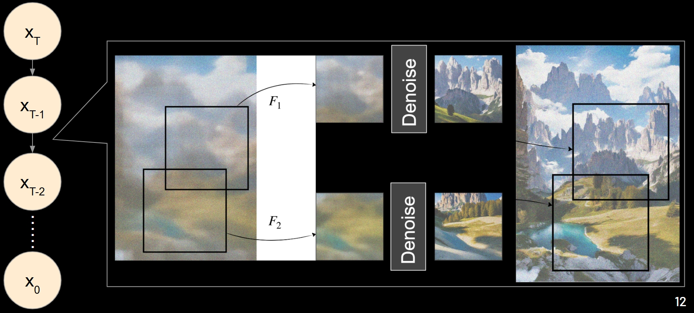
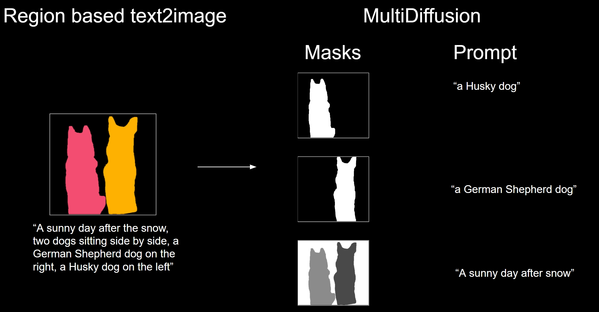
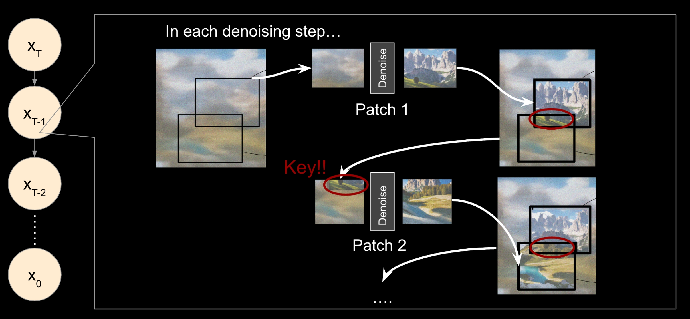
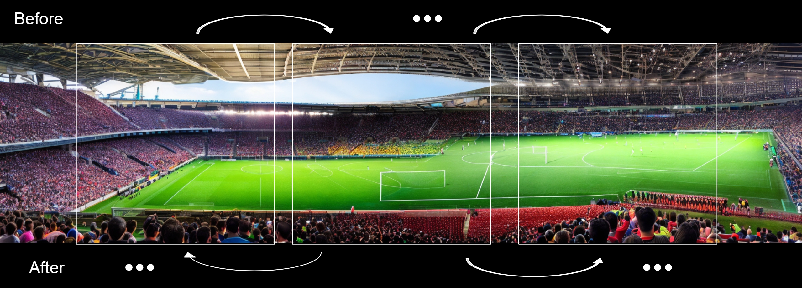

We present a pipeline for generating panorama images with region-based control using a pre-trained diffusion model, inspired by MultiDiffusion. Our approach leverages the ability of diffusion models to denoise "average" images - linear combinations of two images. This enables the generation of panorama images by denoising an average image of the regions to be combined.
While MultiDiffusion can generate either panorama or region-based images, it struggles to achieve both simultaneously. Specifically, it fails to fully adhere to region masks when generating panorama images with region-based control.
We propose a refined pipeline that addresses these limitations by: 1) generating panorama images from the center outward instead of sequentially, and 2) denoising patches dependently rather than independently. Our results demonstrate that the proposed method produces high-quality panorama images with consistent region-based control, overcoming the limitations of MultiDiffusion.
MultiDiffusion is a training-free method for generating panorama images. Their basic idea is to take multiple overlapping patches from the noisy input image and do one denoising step on each of them and then combine them by averaging. This is a very simple and effective method for generating panorama images.
MultiDiffusion also proposes a method for region-based control. Region-based control means that masks of multiple foreground objects are provided and the user can control the shape and position of each object in the final image. The idea is to denoise the foreground and background separately where the foreground is denoised with a random background, so that the foreground objects have tight boundary as the masks have.
Built on the MultiDiffusion framework, we proposed a refined pipeline for generating panorama images with region-based control. To alleviate the inconsistency between different patches, we made two modifications to the original pipeline.
In MultiDiffusion, the patches are denoised independently. Hence, different patches may be denoised to different directions, leading to inconsistent results. For example, the patches on the left denoise the sky to be sunny, while the patches on the right denoise the sky to be cloudy. Then we will have a panorama image with inconsistent sky. To solve this problem, we propose to denoise the patches dependently. We only do this in early denoising steps.
Formally, let \(L\) be the image latent at some time step and \(L_i\) be the \(i\)-th patch of the image latent. Let \(\Phi\) be the pre-trained denoising model. The denoising process of time step \(t\) is: for each patch \(i\), we have: \[ L_i \leftarrow \alpha \Phi\left( L_i \right) + (1 - \alpha) L_i \] where \(\alpha\) is a hyper-parameter that controls the strength of the denoising. Note, \(L_i\) and \(L_j\) may have overlapping pixels, so the denoising of \(L_i\) may affect the denoising of \(L_j\).
As MultiDiffusion does, we also need to record the denoised patches \(\{P_i\}\) and their corresponding masks \(\{m_i\}\). After we denosie all the patches at time step \(t\), we can combine them to form the denoised image latent \(L\): \[ L \leftarrow \frac{ \sum_i P_i \cdot m_i }{\sum_i m_i} \] This is the same as the "average" operation in MultiDiffusion.
In practice, if we do a 50-steps generation, we can do the dependent denoising for the first 10 steps and then switch to independent denoising. 10 steps is enough to make the patches consistent. We find \(\alpha = 0.2\) works well in most cases.
The number of dependent denoising steps and the value of \(\alpha\) should be limited to a small value, otherwise the denoising will be too strong and the results will be over-smoothed.
In MultiDiffusion, the order of denoising the patches does not matter because they are denoised independently. However, when we do dependent denoising, the order of denoising the patches matters. If we denoise the patches from left to right, the patch on the right has only little information from the left patch. Hence, we start denoising from the middle patch and then go to the left and right patches.
Specifically, the only modifications is that we sort the patches by their distance to the center of the image in an increasing order.
We use Stable Diffusion 2.1 as our pre-trained base model. The model is trained on 512x512 images and we use it to generate 512x2048 panorama images. The stride of the patches is 64 pixels.
Background prompt: "A vast desert landscape with rolling sand dunes, scattered dry vegetation"
Foreground prompt: "A vast corn field stretching to the horizon, golden stalks swaying in the breeze"
Masks:This case demonstrates our model's ability to better region mask following and blending.
Background prompt: "Aerial view of Manhattan, New York City, dense skyscrapers, grid-like street pattern"
Foreground prompt: "Aerial view of a forest park, lush green trees, small lakes, recreational areas, dense canopy, detailed foliage "
Masks:This case demonstrates our model's ability to better viewpoint consistency and blending.
Background prompt: "a vast Martian landscape with red rocky terrain"
Foreground prompt: "realistic and highly detailed rows of houses with detailed architecture"
Masks:This case demonstrates our model's ability to better viewpoint consistency but denoise too much on the details of the background.
Background prompt: "Aerial view of snow-covered landscape, pristine white snow, winter wonderland"
Foreground prompt: "Realistic and highly detailed inside view of an active volcano crater"
Masks:This case demonstrates our model's ability to better viewpoint consistency and better blending and region generations.
Background prompt: "A natural night sky, stars twinkling in the darkness"
Foreground prompt: "A massive door floating in the starry night sky"
Masks:This case demonstrates our model's ability to better blending and semantics following.
Without the center-to-side sliding technique, the model struggles at providing viewpoint consistent generation (check out the top left corner of the desert and Manhattan) and at blending the foreground and background (check out the edges of the house on Mars).
Without the dependency-aware generation, the model mostly struggles at providing viewpoint consistency (check out the top left corner of Mars and desert and the region above the forest in Manhattan).